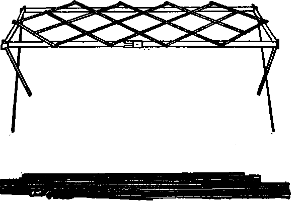
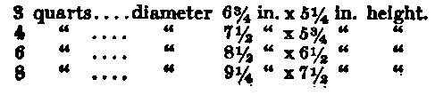

Chapter II. Utensils
Description
This section is from the book "Camp Cookery", by Horace Kephart. Also available from Amazon: Camp Cookery.
Chapter II. Utensils
APARTY going into fixed camp, within wagon call of the railroad, can carry a sheet-steel stove. A good pattern is the Klondike stove shown in the illustration. Its best feature is the size of the fire-box, which takes in wood twenty-eight inches long and thick enough to keep an all-night fire, the stove being closed airtight. The top of the Klondike, 14x30 inches, is free for utensils; the oven, above it, takes a 10x14 pan for baking or roasting. Oven, legs, and pipe stow inside the body of the stove, leaving space for a 12x13x9 1/2-inch galvanized box that holds cooking utensils for four persons and can be used in camp as a dish-pan or as a vermin-proof box for provisions. When packed for transportation, the stove measures 30x14x12 inches, and weighs 29 pounds (complete with box and utensils, 43 1/2 pounds).
In rough country, especially if camp is to be shifted frequently, a stove is out of the reckoning. If pack animals are taken, or the trip is by canoe, without long and difficult portages, it pays to take along either a folding grate or a pair of fire irons. Various patterns of grates are shown in outfitters' catalogues. I have used one called the Gem which is satisfactory of its kind. It weighs 3 1/4 pounds, is 16x28 inches when set up, and folds into a package 1 1/2x19 inches.
A lighter grate is Sackett's camp broiler, 9x14 inches. The legs do not lock in place, and hence are of little use on stony or mushy ground. I remove them, and so have a good grate and broiler weighing only one pound, yet big enough to support a frying pan and coffee pot when laid across a couple of logs or rocks.
Klondike Camp Stove
Fire "irons" are simply two pieces of flat steel 24x1 1/2x1/8 inches, weighing pounds, which are used like the broiler named above. If a mule steps on one of them, it (mule or iron) can quickly be hammered back into correct form.
On light marching trips no support for the utensils will be carried. Bocks or logs will take their place. There may be a little more spilling and swearing, but less tired backs.
It is commonly agreed that four is the ideal number for a camping party, at least among hunters and fishermen. Certainly no larger number should attempt their own cooking. Utensils and table ware for such a party, going light, should include: a large frying-pan (more serviceable than two small ones); a pan to mix dough in and wash dishes (common milk pan); a stout, seamless, covered pot for boiling or stewing meat, baking beans.
Saceztt's Broiler
Saceztt's Broiler etc.; a medium pot or pail for hot water (always wanted, substitute for tea kettle); a smaller one for cereals, vegetables, fruit; and either a coffee pot low enough to nest in the latter, or a covered pail in its place. There should be six plates (two for serving) and four each of cups, knives, forks, teaspoons, tablespoons. This is about as little as the party can well get along with.
It will be bothersome to bake bread for four in the frying-pan. Add a reflector or common sheet steel "roaster and baker," if practicable. A wire broiler, a tea percolator, and a corkscrew and can opener will nest with this set. If the cook wears no sheath knife a butcher knife is essential. Two dish towels (one to be divided into clouts) and a couple of yards of cheesecloth for straining and to hang meat in should be taken.
The common utensils of the shops will not nest. They are all spouts and handles, bail ears and cover knobs. Still, a good deal can be done by substitution. Covered pails do all the work of sauce pans and kettles, and are better all round, for they can either be set upon the coals or hung above the fire; besides, you can carry water in them, and their covers keep heat in and ashes out. All such vessels should be low and broad; then they will boil quickly and pack well. Good proportions are:
Gem Folding Grate.
Bail ears should project as little as possible. Lids should have fold-down rings instead of knobs. If the bails interfere with nesting, substitute light chains.
Ordinary coffee pots are too tall and slender. The best form is what is known as a coffee boiler (see illustration), which nests inside a comparatively small pail, boils quickly, has a bail.
Continue to: